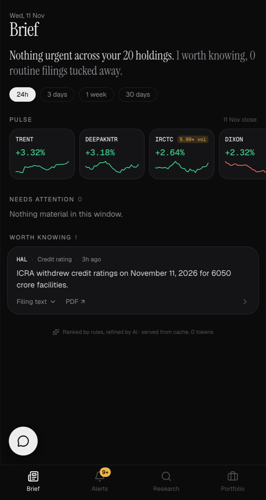

Built for Enam Holdings Live
A mobile-first progressive web app for investors in Indian listed companies. It cuts the daily flood of filings and price moves down to the few that matter, and researches any NSE company from its own annual reports and earnings calls.
Front-end
- Installable PWA with a service worker and web push, so alerts arrive on the phone even when the app is closed.
- Streaming UI: research reports render section by section as the model writes them, so the screen is never blank.
- Fast first paint: rule-ranked filings show up in about 2 seconds, and AI summaries fill in after.
- Small details: sparklines, collapsible filing tiers, a floating chat on every screen, and scroll position restored when you go back.
Behind it
- FastAPI backend with a scheduler for filings, prices and alerts, plus Neon Postgres for caching, so no AI result is paid for twice.
- Two model tiers with automatic fallback to a second provider, so one provider's outage never stops the app.
- Every claim in a report is tagged with its source, for example
[AR 2026 p.34].
- Next.js 16
- React 19
- TypeScript
- Tailwind CSS v4
- Framer Motion
- shadcn/ui
- PWA · Web Push
- FastAPI
- Postgres